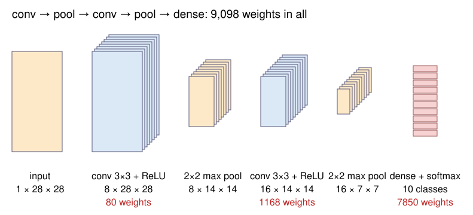

A network for images should know two things about images: neighbouring pixels belong together, and a nucleus is a nucleus wherever it is. A convolutional layer builds in both.
A convolutional layer = a bank of small kernels, learned instead of designed. Each gives a feature map.
The same kernel everywhere (weight sharing): few weights, and shifting the input shifts the maps.
Pooling shrinks the maps; stacked layers see ever larger parts of the image (the receptive field).
Early layers find edges, later ones parts and objects. Augmentation teaches the invariances we want.
Slides titled The math give the formulas and proofs; the ideas are complete without them.
From hand-made features to learned ones
Day 14 (random forests) gave every pixel a feature stack: Gaussian, derivative, LoG, Hessian filters at chosen scales (the edges day), then a classifier on top.
The filters were designed by us: interpretable, no training data needed.
A convolutional network learns the filters, and further layers that combine them, from labelled examples.
The trade-off: learned features adapt to the task, but they need examples (and checking).
Dense layers do not suit images
A 64 \times 64 grey image into a dense layer of 100 units: 4096 \times 100 + 100 = 409{,}700 weights.
Too many weights: each unit has a separate weight for every pixel.
No neighbourhood: the pixel order could be shuffled and the layer would not notice.
No shift: a nucleus in the top-left corner and the same nucleus in the bottom-right use completely different weights. Every position has to be learned separately.
A convolutional layer: a bank of kernels
Recall (the kernels unit, day 1): a 3 \times 3 kernel slides over the image; each output pixel is the weighted sum of the 3 \times 3 neighbourhood.
A convolutional layer applies several kernels, say 8, each giving one output image: a feature map.
Then a bias and the ReLU, as in any layer: each map says “my pattern is here, this strongly”.
The kernel values are weights, learned by backpropagation like any others.
Networks actually compute the correlation (no flip); with learned kernels the flip does not matter.
Try it: one convolutional layer
Weight sharing
The same 9 weights at every position.
Weights per layer: 3 \cdot 3 \cdot C_\text{in} \cdot C_\text{out} + C_\text{out}, independent of the image size. One grey input, 8 kernels: 80 weights, for a 28 \times 28 or a 1000 \times 1000 image alike.
Translation equivariance: shift the input, and every feature map shifts the same way. A detector learned at one position works at all of them.
Compare: the dense layer of the last slide has 409,700 weights and no equivariance.
The math: a convolutional layer
With input channels x_c and output channels y_{c'}:
It is a dense layer whose matrix is sparse (each output depends on a k \times k patch) and repeated (every row is the same kernel, shifted): a banded Toeplitz matrix in 1D.
Equivariance: with T_s = shift by s, \text{conv}(T_sx) = T_s\,\text{conv}(x) (up to borders). The ReLU acts pixel by pixel, so it keeps this. Stride and pooling break it for shifts that are not multiples of the stride.
Backprop through a convolution is again a correlation: \partial\mathcal L/\partial w_{c',c}[u, v] = \sum_{i,j}\delta_{c'}[i, j]\,x_c[i + u, j + v].
Channels
A colour image has 3 channels; the output of a layer with 8 kernels has 8 channels.
A kernel of the next layer covers all input channels: it is 3 \times 3 \times 8, with 72 weights.
So layer 2 combines features: “a vertical edge here and a bright blob next to it”. Each output channel has its own kernel stack.
2×2 max pooling: keep the largest value of each 2 \times 2 block. The map shrinks to half width and height and keeps “the feature is somewhere here”, with a little tolerance to small shifts.
Stride 2: evaluate the kernel only at every second position: also halves the size.
Output size of a layer with kernel k, padding p, stride s on n pixels:
Three 3 \times 3 layers see as much as one 7 \times 7 layer, with 27 instead of 49 weights per channel pair, and two more nonlinearities.
Pooling multiplies the growth: after a 2 \times 2 pool, each further 3 \times 3 layer adds 4 input pixels instead of 2.
Deep layers see whole objects: that is where “nucleus” or “digit 6” can be decided.
Try it: receptive fields
The math: receptive field recursion
Layer l with kernel k_l, stride s_l (pooling: k = s = 2), dilation d_l. Let r_l be the receptive field and j_l the jump: the distance in input pixels between neighbouring units of layer l.
Without pooling or stride, the field grows only linearly: r = 1 + 2L for L layers of 3 \times 3.
What the layers learn

Layer 1 kernels: edges, lines, blobs in different directions. The only layer whose kernels can be looked at as pictures.
Deeper layers: corners and textures, then parts (a loop, a stroke ending), then whole objects (Zeiler and Fergus, 2014).
Ways to look inside: the feature maps for an input; the image patches that excite a unit most; occlusion: cover part of the image and watch the class probability.
A classification network, end to end
conv 3×3 (8) → ReLU → pool → conv 3×3 (16) → ReLU → pool → flatten → dense → softmax, trained with cross-entropy (previous unit).
layer
output
weights
conv, 1 → 8
8 \times 28 \times 28
80
conv, 8 → 16
16 \times 14 \times 14
1,168
dense, 16 \cdot 7 \cdot 7 = 784 → 10
10 scores
7,850
9,098 weights, 98.7 % correct on 10,000 test digits. A dense 784 → 100 → 10 network has 79,510.
Try it: inside a trained network
Data augmentation
Train on modified copies: shifted, rotated, flipped, brighter, darker, slightly deformed. The label stays the same.
The network learns the invariances we can name: “a rotated 2 is still a 2”.
Our digit network: on test digits rotated by 45°, 46.9 % correct without augmentation, 92.9 % with random rotations up to ±45° during training (and 97.2 % instead of 98.7 % on upright digits).
Choose with care: with full rotations a 6 and a 9 become the same class. For cells, rotations and flips are usually safe.
Compare the moments elective: there invariance is built into the features; here it is taught by examples.
Summary
Idea
In one line
Convolutional layer
a bank of learned k \times k kernels, each giving a feature map; bias, ReLU
Weight sharing
same kernel everywhere: k^2C_\text{in}C_\text{out} + C_\text{out} weights, any image size
Equivariance
shift the input, the maps shift; pooling adds a little invariance
Output size
\lfloor(n + 2p - k)/s\rfloor + 1
Receptive field
grows by k - 1 per layer, faster after pooling
Hierarchy
edges → textures → parts → objects
Augmentation
teach invariances by training on modified copies
Next: from “what is in the image” to “which pixels belong to it”: segmentation networks.